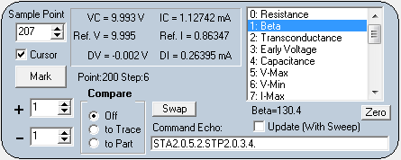

|
The
cursor area is set up for measurement of data points in the trace,
delta measurements and parameteric measurements. Another
related function is comparing trace differences by plotting two traces
in different colors.
The last item is a serial port text box Command Echo that is only visible when Echo On is enabled.
|
The
Sample Point spin edit box
is used to set which data point (0 to 255) Collector Voltage VC and
Collector Current IC values are displayed. The curve for the data point
is the current trace identified by
Sweep Step and Trace No. The location of the Sample Point on the plotted trace can be observed by checking
Cursor. A small circle will appear on the trace line at the
Sample Point.
A reference point can be designated, at the current cursor locaton, by clicking
Mark. This data is stored in
Ref. V and
Ref. I. Delta measurements
DV and
DI
are made with respect to the cursor data and the reference data. The
cursor can be on a separate
Sample Point or even on a different trace.
Both the reference point and cursor sample point are used in
calculating trace parameter values.
Comparison between two traces or two parts is useful when trying to
identify degradation or damage. Also, it is useful for matching two
parts. There are two modes for comparison:
to Trace and
to Part. The
to Trace function uses the plus and minus spin edit buttons to choose the comparison trace. Plus is equivalent to
Sweep Step and minus is equivalent to
Trace No.
to Trace selects the comparison trace from the current part under test.
to Part selects the trace from a part stored in a comparison buffer and the trace is the same as selected with
Sweep Step and
Trace No. Move data from a good know part into the comparison buffer by clicking
Swap. This will exchange the compare buffer traces with the displayed part traces.
The comparison trace is plotted in red and the current part trace is
plotted in green. The colors are combined on the plot so a matched
trace appears yellow.
The list box in the upper right of the cursor area selects the type of
parameter to calculate from the trace data. Follow the instructions and
click on the parameter in the list box to calculate the value. If the
Update With Sweep box is checked, the active list box parameter will recalculate each time a
Run Sweep is initiated.
- 0: Resistance: Calculates the absolute resistance slope using the DV and DI delta values.
- 1: Beta: Calculates current
gain for a transistor. Mark a data point on a trace with base current A
and set the cursor at the same collector voltage point for a trace with
base current B.
- 2: Transconductance: Calulates current/voltage gain for FETs. Mark
a data point on a trace with base voltage A and set the cursor at the
same collector voltage point for a trace with base voltage B.
- 3: Early Voltage:
Mark a point on the flat part of a transistor curve then move the
cursor to a second point on the flat part of the curve. The program
finds the Voltage intercept point at zero current.
- 4: Capacitance: Set
the wavefor to a sine or traiangle wave and set sweep to AC Sweep.
Capacitance between collector and ground is measured.
- 5: V-Max: Finds the maximum voltage in the displayed trace.
- 6: V-Min: Finds the minumum voltage in the displayed trace.
- 7: I-Max: Finds the maximum current in the displayed trace.
- 8: I-Min: Finds the minumum current in the displayed trace.
- 9: Temperature:
Attach a diode between collector (anode) and ground (cathode). Set the
sample point somewhere in the forward conduction region. With the diode
at room temperature (25C), click Mark. Run Sweep and click Temperature to update the value.
- 10: Zmag Measures the peak-to-peak Voltage and Current then divides voltage by current to obtain the magnitude of the impedance.
- 11: Phase Finds the plus and minus current at the voltage zero crossings.
The difference divided by the peak-to-peak current is the sine of the
angle. The angle is returned in degrees. Negative angles indicate
capacitive reactance while positive angles indicate inductive reactance.
- 12: Zreal Calculates the real part (resistance) of a series impedance.
- 13: Zimag Calculates the imaginary part of a series impedance.
- 14: Series Inductance Caclulates the inductance at 60Hz for a series circuit.
- 15: Ymag is the admittance of a parallel circuit (inverse of impedance)
- 16: Yreal Calculates the real part of admittance or the conductance.
- 17: Zimag Calculates the imaginary part or the susceptance.
- 18: Parallel Capacitance Calculates the capacitance at 60Hz for a parallel circuit.
- 19: Parallel Resistance Calculates the resistance for a parallel circuit.
Pressing the
Zero button
will zero the lead capacitance or the lead resistance depending of the
selected list box item. To clear the Zero value, hold the shift key
then click on the Zero button.
Main